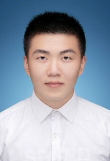

Master
Shuncun Fu received his B.S. in Internet of Things Engineering from Binjiang College, Nanjing University of Information Science and Technology in 2017. Currently he is studying for a master’s degree in Software Engineering in Nanjing University of Information Science and Technology. His areas of interest are mobile computing, big data, cloud computing and machine learning.
Xihua Liu received his B.S. in Internet of Things Engineering from Huaiyin Institute of Technology in 2017. Currently, he is studying for a master’s degree in Software Engineering in Nanjing University of Information Science and Technology. His areas of interest are mobile computing, big data, cloud Computing and machine learning.
Ruichao Mo received his B.S. in Software Engineering from Binjiang College, Nanjing University of Information Science and Technology in 2019. He is currently studying for his master’s degree in Computer Science and Technology in Nanjing University of Information Science and Technology. His areas of interest are mobile computing, big data, cloud computing and machine learning.

Dawei Zhu received his B.S. in Internet of Things Engineering from Nanjing University of Information Science and Technology in 2019. He is currently studying for his master’s degree in Computer Science and Technology in Nanjing University of Information Science and Technology. His areas of interest are mobile computing, big data, cloud computing, machine learning and block chain.
Qi Wu received his B.S. in Computer Science and Technology Engineering from Nanjing University of Information Science and Technology in 2019. He is currently studying for his master’s degree in Computer Science and Technology in Nanjing University of Information Science and Technology. His areas of interest are mobile computing, big data, cloud computing and machine learning.

Xing Zhang received his B.S. in Software Engineering from Binjiang College, Nanjing University of Information Science and Technology in 2019. He is currently studying for his master’s degree in Computer Science and Technology in Nanjing University of Information Science and Technology. His areas of interest are mobile computing, big data, cloud computing and machine learning.
Chengxun He received his B.S. in Computer Science and Technology Engineering from Nanjing University of Information Science and Technology in 2019. He is currently studying for his master’s degree in Computer Science and Technology in Nanjing University of Information Science and Technology. His areas of interest are mobile computing, big data, cloud computing and machine learning.
Bachelor
Qing Cai received the B.Sc. in Computer Science and Technology at Nanjing University of Information Science and Technology in 2019. In the same year, she was admitted to study for a M.Sc. in Institute of Computing Technology, Chinese Academy of Sciences without entrance examination. Her research interests include mobile edge computing and 5G.
Qingxiang Liu is currently pursuing the B.S. degree in software engineering with the School of Computer and Software, Nanjing University of Information Science and Technology, Nanjing, China. He has authored or coauthored a conference paper at IEEE Big Data Security 2018 and journal papers at Future Generation Computer Systems and on IEEE Transactions on Computational Social Systems. His current research interests include big data and service computing.
Yuhao Chen is currently studying for a bachelor's degree at School of Computer and Software in Nanjing University of Information Science and Technology. His research interest is mobile cloud computing.
Yuan Xue is currently working towards his B.S. degree in Computer Science and Technology at School of Computer and Software in Nanjing University of Information Science and Technology. His research interests include Blockchain and Mobile Edge Computing.

Yi Chen is currently studying for B.S. in Computer Science and Technology at School of Computer and Software in Nanjing University of Information Science and Technology. He has published three journal papers at Software: Practice and Experience, World Wide Web journal and Multimedia Tools and Applications. His research interests include Big Data and Deep Learning.

Hao Cao is currently working towards his B.S. degree in Computer Science and Technology at School of Computer and Software in Nanjing University of Information Science and Technology. His research interests include Mobile Edge Computing and SDN.

Xiang Li is currently working towards his B.S. degree in Computer Science and Technology at School of Computer and Software in Nanjing University of Information Science and Technology. His research interests include Mobile Cloud Computing and Edge Computing.
Yuancheng Li is currently working towards his B.S. degree in Computer Science and Technology at School of Computer and Software in Nanjing University of Information Science and Technology. His research interests include Cloud Computing and Edge Computing.

Qingfan Geng is currently studying for a B.S degree in Computer Science and Technology at the School of Computer and Software at Nanjing University of Information Science and Technology. Her research includes Cloud Computing and Blockchain.

Zijie Fang is currently working towards his B.S. degree in Computer Science and Technology at School of Computer and Software in Nanjing University of Information Science and Technology. His research interests include Deep Learning and Edge Computing.
Bowen Shen is currently working towards his B.S. degree in Computer Science and Technology at School of Computer and Software in Nanjing University of Information Science and Technology. His research interests include edge computing and IoT.

Qihe Huang is currently working towards his B.S. degree in Computer Science and Technology at Nanjing University of Information Science and Technology. His research interests include Internet of Things (IoT) and Mobile edge computing.
Xuan Yan is currently working towards his B.S. degree in Computer Science and Technology at School of Computer and Software in Nanjing University of Information Science and Technology. His research interests include Big Data and Edge Computing.
Shuo Wang is a student working towards his B.S. degree in Computer Science and Technology at School of Computer and Software in Nanjing University of Information Science and Technology.His areas of interest are cloud computing and blockchain technology.